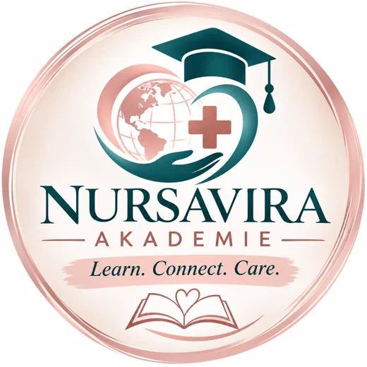

Pflegefachsprache
Fachbegriffe verstehen und im Gespräch richtig anwenden.
Individueller Online-Unterricht für internationale Pflegekräfte – in Deutschland und weltweit. Verständlich, praxisnah und persönlich.
Learn. Connect. Care. ♡
Wir üben genau die Situationen, die dir im deutschen Pflegeberuf begegnen.
Fachbegriffe verstehen und im Gespräch richtig anwenden.
Strukturierte Übergaben, Pflegeberichte und Formulierungen üben.
Mit Bewohnern, Patienten, Angehörigen, Ärzten und Teams sprechen.
Individuell lernen für fachliche Prüfungs- und Anerkennungssituationen.
Ich bin examinierte Krankenschwester mit rund 13 Jahren Berufserfahrung und einem Bachelorabschluss in Wirtschaftspsychologie. Mit NURSAVIRA AKADEMIE unterstütze ich internationale Pflegekräfte dabei, im deutschen Pflegealltag sprachlich und fachlich sicherer zu werden.

Schreibe uns, was du lernen möchtest.
Wir sprechen über deine Ziele und machen eine kurze Übung.
Wir vereinbaren passende Termine und Lerninhalte. Preise auf Anfrage.
Für internationale Pflegekräfte, die bereits in Deutschland leben oder sich im Ausland auf die Arbeit in Deutschland vorbereiten. Der Unterricht ist online und ortsunabhängig.
Nein. Der Unterricht findet online statt und ist auch aus dem Ausland möglich.
Wir besprechen dein aktuelles Sprachniveau in der Kennenlernstunde und passen die Übungen an deine Ziele an.
NURSAVIRA AKADEMIE bietet individuellen Unterricht und Lernbegleitung, keine staatlich anerkannte Berufsqualifikation oder offizielle Sprachprüfung.
Buche deine kostenlose 30-minütige Kennenlernstunde direkt über Calendly. Für weitere Fragen findest du uns auf LinkedIn.
Hinweis: Der Link führt derzeit zur LinkedIn-Suche. Nach Erstellung der Unternehmensseite hier den direkten Profil-Link einsetzen.